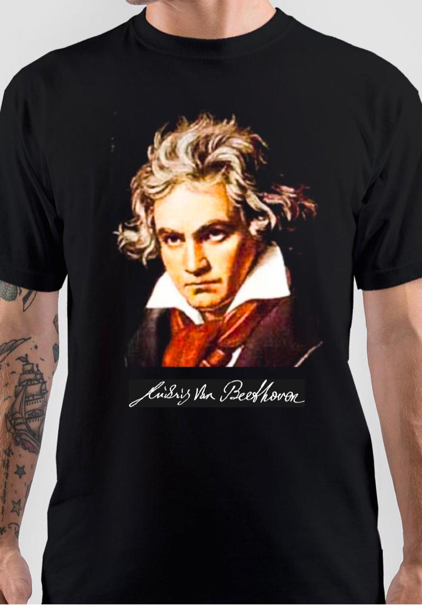

home
deze site gaat over Ludwig van Beethoven je kan hier info over Beethoven en sapige merch kan kopen
info
Ludwig van Beethoven gebooren op 17 december 1770 tot 26 maart 1827) was een Duitse componist, musicus, virtuoos en dirigent. Zijn stijl sluit direct aan op die van Mozart en Haydn, met wie hij tot de Eerste Weense School wordt gerekend. Hij bracht het classicisme tot voltooiing en leidde de romantiek in. Hij wordt onder de invloedrijkste componisten gerekend. Zijn oeuvre heeft een overheersende invloed gehad op de negentiende-eeuwse muziek
merch
klik voor merch te koopen beste songs
klik hier voor de beethoven-top-10persoonlijk vind ik Für Elise en Beethoven Sonata N° 23 'Appassionata' Daniel Barenboim de beste van al Beethoven zijn muziek